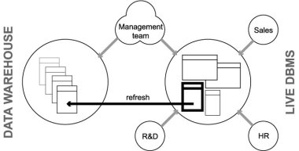
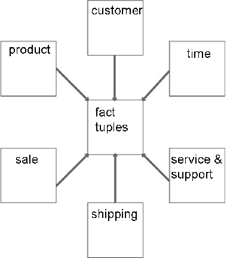
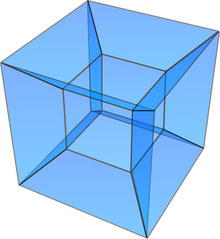

5.2. Decision Support
In this lecture we look at...
[
Section notes
PDF 85Kb]
5.2.01. Introduction
Decision support systems (DSS)
Duplicates of live systems, historical archiving
Primarily read-only
Load and refresh operations
Integrity
Assumptions about initial data
Large, indexed, redundancy
5.2.02. DSS Management
Design
Logical
Temporal keys, required to distinquish historical data (since:to
current & during:within interval)
Physical (Hash indexes, Bitmap indexes)
Controlled Redundancy
Synchronisation/update propogation
Synchronous (update driven)
Asynchronous (query driven)
5.2.03. Data Preparation
Extract
pulling from live database system(s)
Cleansing
Transformation and Consolidation
migrating from live or legacy system design
to DSS design
Load (DSS live/query-able)
Refresh (latest update)
5.2.04. Querying
Boolean expression complexity
heavy WHERE clauses
Join complexity
Normalised databases, many tables
Facts distributed across tables
Joins required to answer complex questions
Function and Analytic complexity
Often require non-DBMS functions
Smaller queries with interleaved code
5.2.05. Data Warehouse
Specific example of DSS
Subject-orientated
e.g. customers/products
Non-volatile
once inserted, items cannot be updated
Time variant
Temporal keys
Accuracy and granularity issues
5.2.06. DB Company organisation
By example

5.2.07. Dimensional Schema
Consider product, customer, sales data
Each sale represents a specific event
when a product was purchased
when a customer bought something
when a sale was recorded
Each can be thought of as an axis
or dimension (3D)
Each occurred at a moment in time (4D)
5.2.08. Star schemae and Hypercubes
Data centralised in ‘fact’ table
Referencing creates star pattern
Dimensions as satellite tables
Normalising creates snowflake schema

5.2.09. Hypercubes
Hypercube is also a multi-processor topology inspired by a 4D shape
Used by Intel’s iPSC/2
Good at certain database operations
e.g. Duplicate removal
MIMD

{kind=link}
{kind=link}